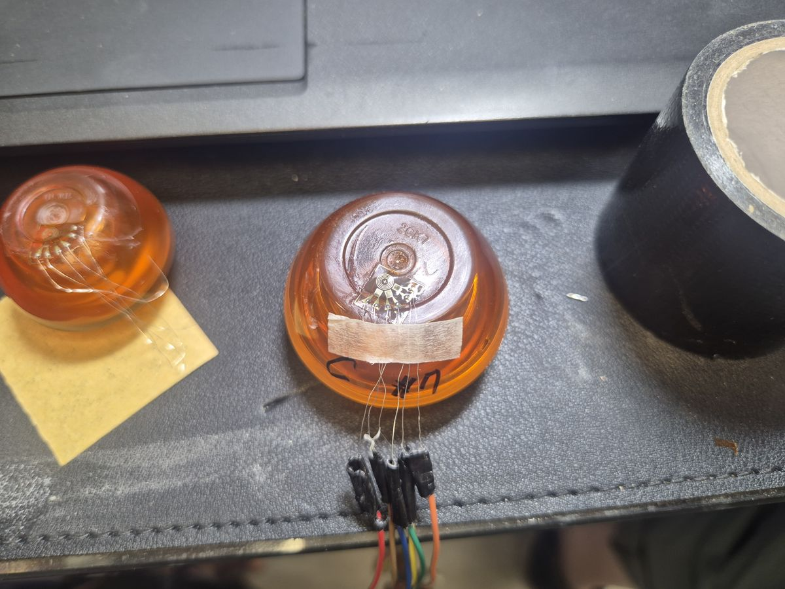
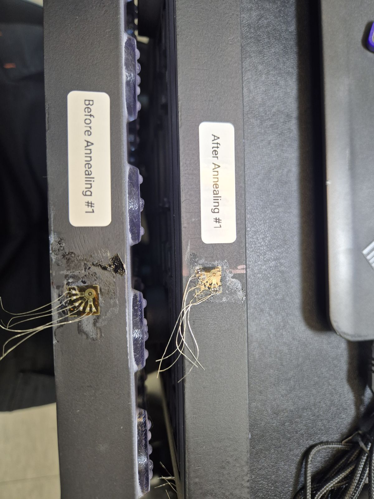
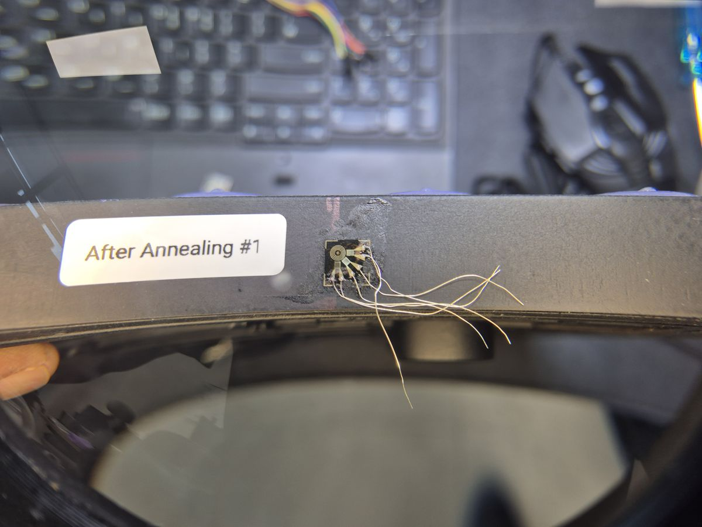
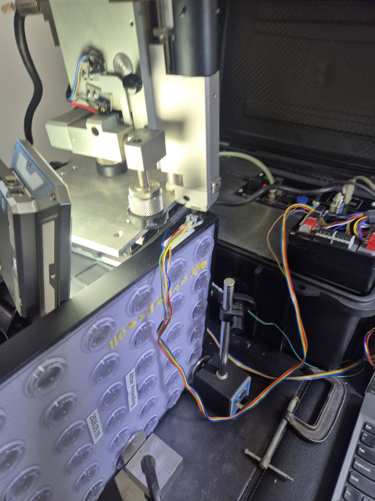
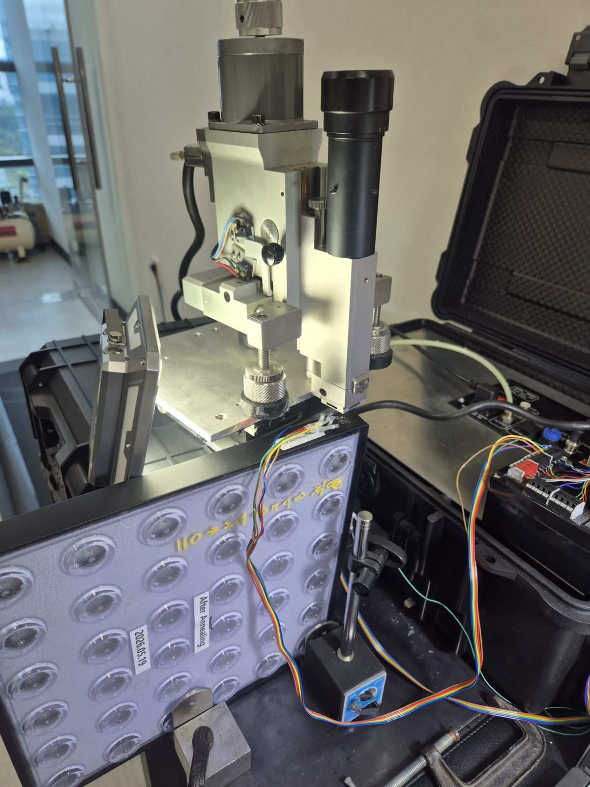

← 기술자료 목록
플라스틱 성형품 잔류응력 측정 사례
현장 계측 사례 · 플라스틱 성형품 잔류응력
플라스틱 성형품 잔류응력 측정 사례
화장품 용기·트레이 홀드릴링
투명 화장품 용기와 어닐링 전·후 플라스틱 트레이 시편에 스트레인게이지 로제트를 부착하고, ASTM E837 홀드릴링 절차로 성형품 잔류응력을 측정한 현장 계측 사례입니다.
용기 + 트레이
투명 화장품 용기
플라스틱 트레이 시편
플라스틱 트레이 시편
어닐링 전·후
후처리 효과 비교용
시편 구성
시편 구성
홀드릴링
SINT MTS3000
ASTM E837 절차
ASTM E837 절차
시험 개요
사출 성형품은 냉각 과정의 속도 차이 때문에 내부에 잔류응력이 남기 쉽고, 이는 변형이나 균열, 약품에 의한 크랙의 원인이 됩니다. 씨앤디테크는 작은 투명 화장품 용기와, 격자 형태 플라스틱 트레이의 어닐링 전·후 시편에 각각 로제트를 부착해 홀드릴링 측정을 진행했습니다.

화장품 용기 로제트 부착

용기 위 홀드릴링 장비
계측 절차
시편마다 로제트를 부착하고 구분 표시를 한 뒤, 형상에 맞게 고정하고 홀드릴링 장비로 단계별 변형률을 기록했습니다.
01
시편 확인
화장품 용기, 어닐링 전·후 트레이 시편과 측정 위치 확인
02
표면 준비
측정 부위 표면 정리, 게이지 접착면 확보
03
로제트 부착
시편별 로제트 부착, 리드선 연결, 시편 구분 표시
04
시편 고정
용기·트레이 형상에 맞게 시편을 안정적으로 고정
05
홀드릴링 가공
SINT MTS3000으로 단계별 드릴링, 변형률 기록
06
해석
변형률 변화로 잔류응력 크기·방향 산출

어닐링 전·후 시편 로제트 부착

어닐링 후 시편 로제트

트레이 시편 홀드릴링 장비 설치

측정 진행 구성
지원 역량 및 서비스 범위
씨앤디테크는 SINT MTS3000 홀드릴링 장비로 금속뿐 아니라 플라스틱 성형품의 잔류응력도 현장에서 측정하며, 시편 형상에 맞는 고정 방법과 소재에 맞춘 측정 조건을 협의해 진행합니다.
관련 기술 자료 더 보기:
자주 묻는 질문 (FAQ)
플라스틱 성형품 잔류응력 측정 관련 질문
사출 성형 시 냉각 속도 차이와 흐름 때문에 성형품 내부에 응력이 남습니다. 이 잔류응력은 변형, 균열, 화학약품에 의한 크랙(환경응력균열)의 원인이 될 수 있어 성형 조건이나 후처리 효과를 확인할 때 실측합니다.
어닐링(열처리)은 성형 후 남은 잔류응력을 줄이기 위한 후처리입니다. 같은 제품의 어닐링 전 시편과 후 시편에 같은 방법으로 로제트를 부착해 측정하면 후처리 효과를 비교할 수 있습니다.
로제트를 부착할 면과 시편을 안정적으로 고정할 방법이 있으면 가능합니다. 이번 사례에서는 작은 투명 용기와 격자 형태의 트레이 시편에 각각 맞는 고정 방법으로 측정했습니다. 소재에 맞는 가공 조건 설정이 필요합니다.
ASTM E837은 금속 시편을 기준으로 한 규격입니다. 플라스틱은 소재 특성이 다르므로 규격의 해석 절차를 참고하되 소재에 맞춘 측정 조건과 해석 방법을 협의해 진행합니다.
가능합니다. 씨앤디테크는 SINT MTS3000 홀드릴링 장비로 시편이 있는 현장에서 직접 측정합니다. 시편 소재, 형상, 측정 목적을 알려주시면 일정과 방법을 안내해 드립니다.
플라스틱 성형품 잔류응력 측정 문의
시편 소재, 형상, 측정 목적을 알려주시면 측정 방법과 일정을 안내해 드립니다. 현장 출장 측정도 지원합니다.